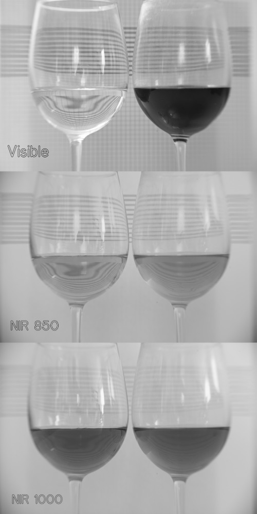

Red Wine is as Clear as Water When Seen in Infrared Light
Alex Bock 2023-04-17
The following image compares a glass of water (left) and a glass of red wine (right) in visible light and near infrared light. The reference lines drawn on the background are positioned to be visible behind the liquids after refraction to judge transparency.
In the visible light image, the distorted lines are clearly visible through the water, while the wine is completely black.
The red wine is opaque in visible light, but it becomes transparent in near infrared light longer than 850 nm. The transmission of the red wine in the infrared appears almost identical to that of the water. The water itself appears slightly dark in the 850 nm longpass image due to its absorption of some infrared light. In the 1000 nm longpass image, both liquids are still transparent enough to see the refracted view of the reference lines in the background, but the infrared absorption of water becomes significant enough to render it very dark.
All three images were taken with a Sigma sd Quattro using the custom near infrared camera lens I described making in a previous post. The image labeled "Visible" was taken with the camera's infrared-blocking filter installed. The two near infrared images were taken with the infrared-blocking filter removed. The image labeled "NIR 850" was taken with an 850 nm longpass filter (Thorlabs FGL850M). The image labeled "NIR 1000" was taken with a 1000 nm longpass filter (Thorlabs FELH1000).
Note that although both filters are longpass filters, the Sigma sd Quattro sensor drastically declines in sensitivity between 850 nm and 1000 nm. The longer near infrared light detected with a longer exposure in the 1000 nm longpass image does not appreciably contribute to the 850 nm longpass image.
Back to Index